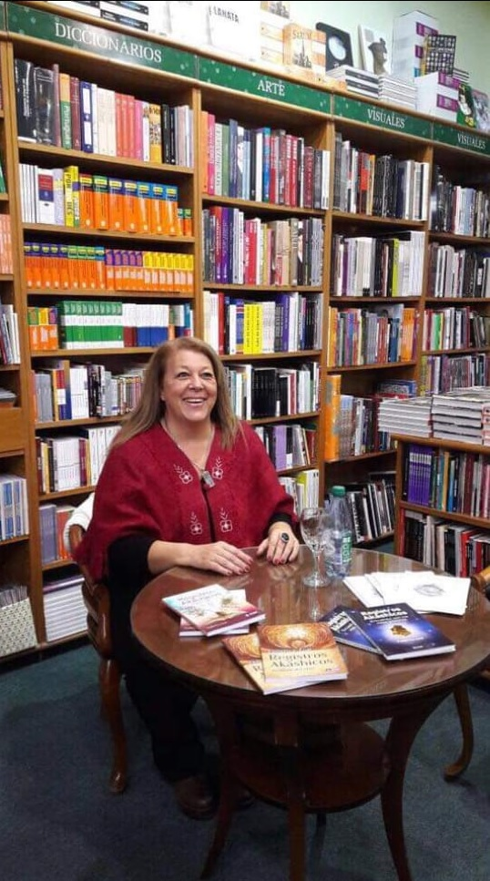
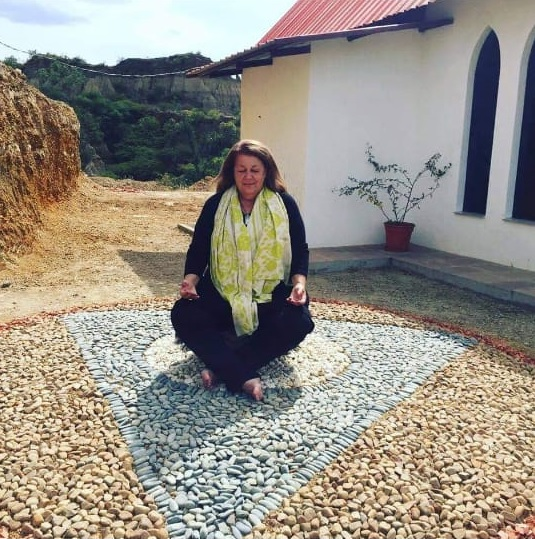

Desde pequeña tuve visiones, contactos y comunicación con otras inteligencias
y con la divinidad más allá de los nombres que en la Tierra se le adjudica.
La conexión se dio con seres de mucha luz de evoluciones superiores a la
nuestra, como así también con seres de los reinos elementales de la naturaleza.
Gracias al Gran Espíritu mi familia no interfirió en esta capacidad despierta
y pude mantenerla sin que se adormeciera. También tengo que agradecer y hacer
saber que es un honor pertenecer a través de lazos sanguíneos a la raza Mapuche,
venerados ancestros que me transmitieron en meditaciones, sueños y visiones
el arte de sanar el alma con la fuerza del espíritu.
En la adolescencia comenzaron a aparecer personas en mi vida que querían
transmitirme conocimientos, con la única justificación “vos esto lo tenes que
saber”, y bueno yo observaba, escuchaba y sin preguntar mucho asimilaba
sabiendo en mi interior que cuando fuera el tiempo esto sería utilizado.
Este aparecer de seres de luz encarnados sigue sucediendo y también estoy
profundamente agradecida. Un gran maestro fue y sigue siendo para mí, quien en
la tierra es conocido como Jesús el Cristo, con quien tengo mucha afinidad desde
hace ya varias encarnaciones atrás.

A mis 24 años decidí estudiar Hatha Yoga para trabajar mi cuerpo y para luego poder dar a través de esas clases otras cosas que había recibido. Luego cursé dos años muy intensos en una escuela de meditación, en donde practicábamos kung Fu, Tai Chi Chuan, meditación con cristales, meditaciones metafísicas, conexión con seres extra terrestres, trabajo con alquimia sexual, realmente fue muy profundo y acelerado el aprendizaje. Mientras estaba en esta escuela llamada Nous viaje a Méjico al congreso internacional organizado por la Fundación Acción Guardiana Internacional para latino América, en donde estuve con la Sra. Tuella, hermoso ser!!! Autora de libros súper importantes como Dinámica de la telepatía cósmica, el Diamante; también estaba mi maestra maya Lourdes Miranda a quien recuerdo con todo mi amor. En Monterrey se hizo este encuentro en 1992 y allí recibí junto a 400 personas más el conocimiento del calendario de los mayas. A partir de ese año me puse en contacto con José Argüelles y su esposa Lloydine y asistí a todos sus congresos que se realizaron en diversos países en donde transmitieron el juego de la profecía Telektonon, Las 20 tablas de la Ley del Tiempo, La meditación Galáctica, El misterio de la Piedra, 7:7::7:7, y encuentros para hablar sobre el movimiento mundial por el cambio al calendario de las trece lunas de 28 días. Paralelamente desde ese año y hasta el presente fui recibiendo diversos conocimientos Iniciación como facilitadota en Mercaba, Iniciación en sanaciones chamánicas, Iniciación como Maestra en Apertura y lectura de los Registros Akashicos, Iniciación como Maestra de Reiki Usui Tibetano, Iniciación como facilitadota de implantes de cristales estelares etéricos de Sirio, Tarot Egipcio. Iniciación como Sanyasin de Osho. Terapeuta de Shiatsu.

Comenzó mi tarea de divulgadora de conocimientos en 1992 en radios AM y FM
nacionales e internacionales. También en revistas, diarios, libros y televisión
abierta y en sistemas de cable.
Con un grupo de trabajadores para el despertar planetario fundamos la Asociación
sin fines de lucro Gente de la Tierra, que tiene como objetivo la repoblación en
comunidades autónomas.
Actualmente continúo escribiendo libros para la toma de conciencia, y
difundiendo en todos los medios que se presenten. Viajo por el mundo entregando
conocimientos en este último período de despertar planetario.
Y ahora a través de esta página que llamo mi hogar virtual amplifico la
difusión para llegar a abrazarlos a todos desde mi ser.
"Que la Paz sea el perfume que acaricie tu Ser"